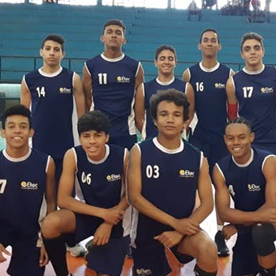

Time de vôlei é bicampeão
Time da escola ETEC Coronel Raphael Brandão é campeão pela segunda vez consecutiva no torneio municipal de vôlei dos jogos escolares de São Paulo.
Por João Alberto Barbosa — Colombia

O torneio acontece todos os anos, contando com a participação das cidades ao redor do município de Barretos. Ao todo são mais de 5 categorias de esportes apresentados neste torneio, tanto feminino quanto masculino.
O time masculino de vôlei do ano de 2019 da ETEC, não perdeu nenhum jogo do torneio municipal, este time contava com os jogadores: Matheus nº8, João Alberto nº16, Luís Felipe nº17, Matheus nº9, Marcos nº 11, Pedro nº 14, Paulo nº6, Nicolas nº7, Wagner nº4, Felipe nº 3 e Guilherme nº12. Com o time cheio de caras novas, eles conseguiram chegar até as qualificatórias do torneio regional, que aconteceu na cidade de Bebedouro, mas acabaram perdendo para o time da escola de Monte azul e assim sendo eliminados.
No ano de 2018 o time escolar da ETEC também ganhou o torneio municipal sem perder nenhum jogo, e indo para as qualificatórias do regional que aconteceram em Barretos e se qualificando para o regional, que aconteceu na cidade de Sertãozinho.